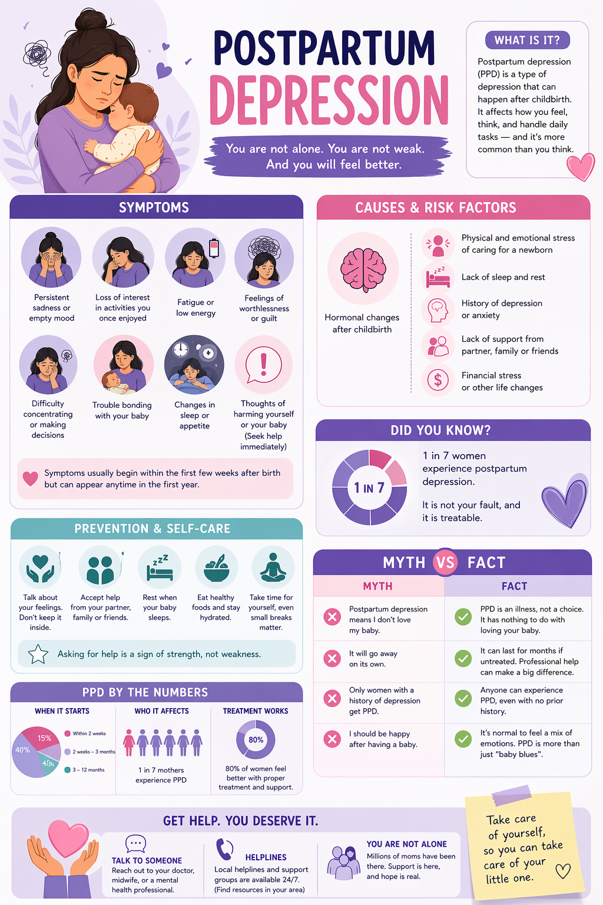

Symptoms
Recognize emotional, physical, and behavioral warning signs.
Support starts with understanding. Learn the signs, reduce stigma, and help mothers get the care they deserve.
Recognize emotional, physical, and behavioral warning signs.
Understand hormone changes, stress, and social pressure.
Early support and open conversations can change outcomes.
About
Postpartum depression is not a weakness. It is a mental health condition that can affect mothers after childbirth and may impact mood, sleep, appetite, focus, and bonding.
Awareness helps people spot warning signs earlier, reduce stigma, and encourage compassionate support from families, friends, schools, and communities.
Visual Guide

Symptoms and Causes
😔
Feeling empty, hopeless, or overwhelmed most days.
😴
Extreme fatigue, insomnia, or disrupted sleep patterns.
💭
Frequent worry, panic, or difficulty concentrating.
1 in 7 mothers may experience postpartum depression
Prevention and Support
Prioritize sleep, hydration, nutritious meals, and short rest breaks.
Offer practical help and listen without judgment or pressure.
If symptoms persist over two weeks, seek mental health support.
Myth vs Fact
Postpartum depression only happens in the first few days after birth.
Symptoms can begin any time in the first year, and they may appear gradually.
Talking about postpartum depression will make it worse.
Talking to trusted people and professionals often reduces shame and speeds support.
Treatment always means taking strong medicine.
Treatment can include counseling, support groups, lifestyle support, and medical care when needed.
If a mother can still do daily tasks, she cannot have postpartum depression.
Many people mask symptoms in public while struggling internally and still need help.
Tips Videos
Watch practical advice and support guidance for postpartum mental health.
Learn more ways families and friends can support recovering mothers.
Understand signs to watch for and when to seek professional help early.
Discover coping tools, rest strategies, and ways to lower daily stress.
Get encouragement and reminders that recovery is possible with support.
Help and Contact
You can add your local hotline and Philippine mental health resources here.